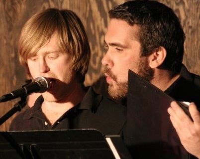

DAN MAHONEY
Actor
Dan Mahoney is an associate artist with needtheater and has appeared on Chappelle's Show (Comedy Central), Law & Order: SVU (NBC), World's Best Rollercoasters (Travel Channel) and Ultimate Film Fanatic: Live (IFC/Sundance). Dan trained in acting at Northwestern University and has studied and performed improvisation at iO (Chicago), iO West (LA), Second City (Chicago), the Groundlings (LA), and P.I.T. Theater (NYC). He directed Matt Sax's solo hip hop musical Clay (Edinburgh), is a co-founder of the Striking Viking Story Pirates (NYC) and played Sam in needtheater's inaugural production of CJ Hopkins's Horse Country. His voice can currently be heard in Stan Lee's Time Jumper, a web series for Disney.
Dan in Action...

Performing "El Royale" at St. Nick's Pub

Leading the karaoke party.